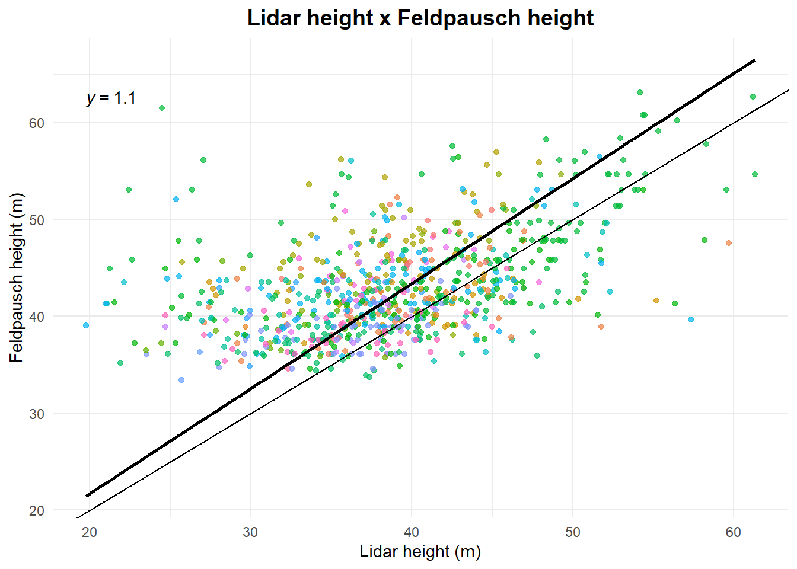
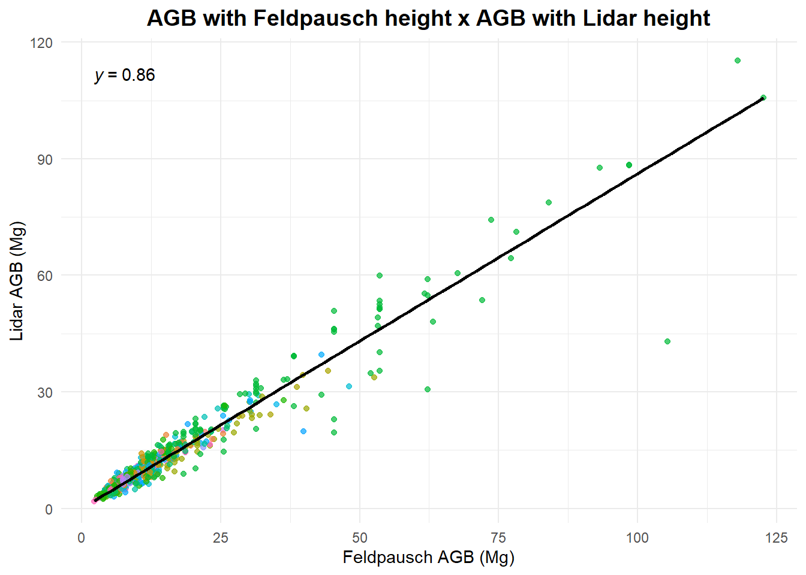
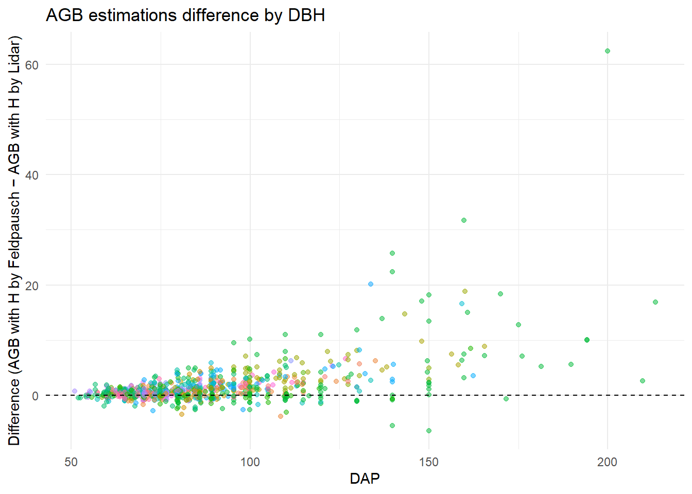
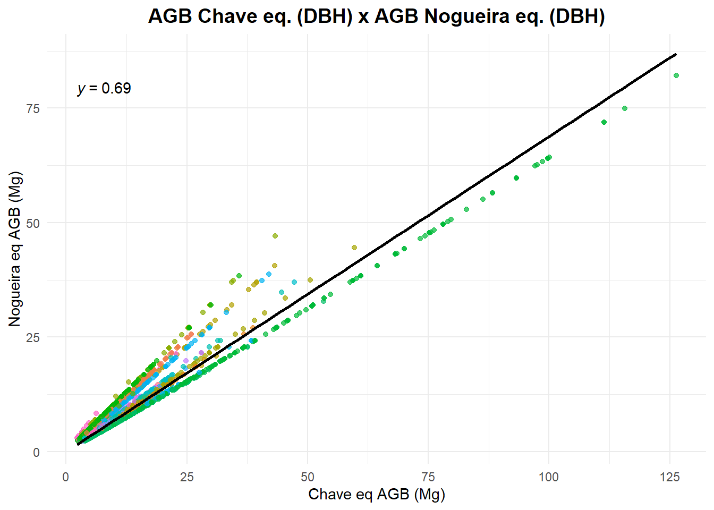
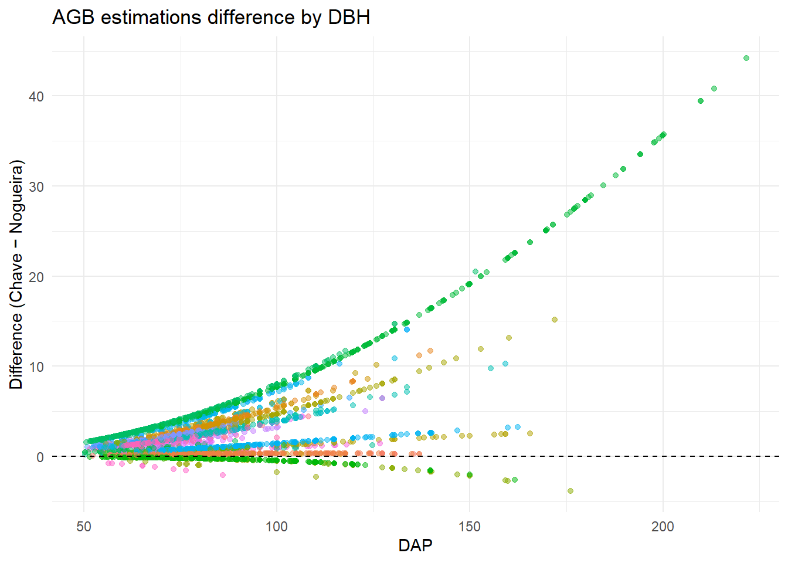
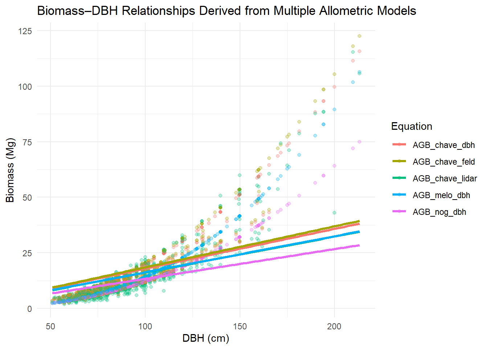

8 Estimate biomass with different total height estimations
8.1 Introduction
This script estimates Above-Ground Biomass (AGB) for a given Annual Production Unit in the Jamari Forest Concession using two different total height estimates: one derived from LiDAR (see Chapter 7), and the other obtained via the rerieveH function from BIOMASS package (Réjou-Méchain et al. (2017)).
We also estimate biomass with only DBH using three different equations: Chave et al. (2014), Nogueira et al. (2008) and Melo et al. (2024).
Finally, the results from these approaches are compared to assess the impact of height estimation and equation choice on biomass estimates.
8.2 Lecture
8.3 Setup
You need BIOMASS package to estimate the biomass, dplyr and tidyr to manipulate tabular data and ggplot to visualization.
8.4 Allometric equations parameters
Some parameters used to build the allometric equations used in this workflow. It is important to see if the allometric equation is suitable for the data.
Code
| Study | Region | Phytophysiognomy | Number.of.measured.trees | Minimum.DBH | Maximum.DBH | AGB.equation |
|---|---|---|---|---|---|---|
| Nogueira et al., 2008 | Southern amazonia | FOA | 300 | 5 | 124 | ln(Dry weight)=-1.716 (±0.079) + 2.413 (±0.029) × ln(Diameter) |
| Melo et al., 2024 | Floresta Estadual do Antimary | FOA com palmeiras | 190 | 5 | 90 | DMtw = 0,064 * DBH2,671 + 3,69 |
| Chave et al., 2014 | Pantropical | 53 undisturbed and 5 secondary | 4004 | 5 | 212 | AGBest = 0,0673 x (q * D2 * H)0,976 |
| Chave et al., 2014 without height, modified by Réjou-Méchain et al., 2017 | _ | _ | _ | _ | _ | AGB = exp(-2,024 - 0,896 * E + 0,920 * ln(WD) + 2,795 * ln(DAP) - 0,0461 * [ln(DAP)2]) |
8.5 Load the Inventory
Let’s load the Commercial Forest Inventory with the different height estimations.
Making sure what Annual Production Unit and Forest Management Unit we are working with.
8.6 Retrieving height from BIOMASS
retriveH function in `BIOMASS package estimates tree total height using allometric equation from Feldpausch et al. (2011), based on the location of the trees. It uses a Weibull function to estimate height from the diameter of the tree, based on a large number of plots.
The coordinates in this script refer to Jamari National Forest.
See relation between height from retrieveH and obtained with Lidar.
Code
ggplot(if100,
aes(x = z_lidar,
y = altura_feld)) +
geom_point(alpha = 0.7,
aes(color = nome_florabr)
) +
geom_smooth(method = "lm",
se = FALSE,
color = "black",
formula = 'y ~ 0 + x') +
theme_minimal() +
labs(
title = "Lidar height x Feldpausch height",
x = "Lidar height (m)",
y = "Feldpausch height (m)"
# ,color = "Species"
) +
theme(
plot.title = element_text(hjust = 0.5,
size = 14,
face = "bold")
,legend.position="none"
# ,legend.title = element_text(face = "bold")
) +
geom_abline() +
ggpubr::stat_regline_equation(formula = 'y ~ 0 + x')
8.7 Retrieving wood density
Then we correct scientific names in the table. For this we will use correctTaxo from BIOMASS. This function needs a “genus” and a “species” column.
8.8 Estimating biomass
8.8.1 Estimating biomass with total height
We estimated only some of the commercial species tree height using Lidar. We will remove all trees without Lidar estimated height, so we can compare AGB estimates. We need a new taxo for the reduced data frame.
Then we get the wood density of each species.
Compute AGB with Chave et al. (2014) equation and Feldpausch et al. (2011) height.
Compute AGB with Chave et al. (2014) equation and Lidar height.
Now let’s compare the different AGB estimates.
Code
ggplot(if100.red,
aes(x = AGB_chave_feld,
y = AGB_chave_lidar)) +
geom_point(alpha = 0.7,
aes(color = nome_florabr)) +
geom_smooth(method = "lm",
se = FALSE,
color = "black",
formula = 'y ~ 0 + x') +
theme_minimal() +
labs(
title = "AGB with Feldpausch height x AGB with Lidar height",
x = "Feldpausch AGB (Mg)",
y = "Lidar AGB (Mg)",
color = "Species"
) +
theme(
plot.title = element_text(hjust = 0.5,
size = 14,
face = "bold"),
legend.title = element_text(face = "bold")
,legend.position="none"
) +
ggpubr::stat_regline_equation(formula = 'y ~ 0 + x')
Is the difference between the biomass estimates different across the DBHs? Comparing AGB estimates with different heights estimates across DBHs.
Code
if100.red$diff_agbs_h <- if100.red$AGB_chave_feld - if100.red$AGB_chave_lidar
ggplot(if100.red,
aes(x = DAP,
y = diff_agbs_h)) +
geom_point(alpha = 0.5,
aes(color = nome_florabr)) +
geom_hline(yintercept = 0,
linetype = "dashed") +
theme_minimal() +
theme(,legend.position="none")+
labs(x = "DAP", y = "Difference (AGB with H by Feldpausch − AGB with H by Lidar)",
title = "AGB estimations difference by DBH")
8.8.2 Estimating biomass using only DBH
We will use Chave et al. (2014), Nogueira et al. (2008) e Melo et al. (2024) equations to estimate AGB using only DBH.
It is important to point out that Nogueira et al. (2008) and Melo et al. (2024) uses only DBH, whereas Chave et al. (2014) uses, in addition to DBH, wood density and a variable representing environmental stress (see Réjou-Méchain et al. (2017) for the minor modification in Chave et al. (2014) equation used in BIOMASS).
Code
if100$AGB_chave_dbh <- computeAGB(D = if100$DAP,
WD = w_density$meanWD,
coord = c(-62.99,
-9.11))
# AGB = exp(-2,024 - 0,896 * E + 0,920 * ln(WD) + 2,795 * ln(DAP) - 0,0461 * [ln(DAP)^2])
if100$AGB_nog_dbh <- (exp(-1.716 + 2.413 * log(if100$DAP))) / 1000
# We have to divide results by 1000 because equation gives AGB in kg
if100$AGB_melo_dbh <- (0.064 * (if100$DAP^2.671) + 3.69) / 1000
# We have to divide results by 1000 because equation gives AGB in kgTo plot the three equations results in the same graph, we must convert data to LONG format.
Now let’s plot them.
Code
ggplot(df_long,
aes(x = DAP,
y = biomass,
color = equation)) +
geom_point(alpha = 0.3) + # pontos opcionais
geom_smooth(method = "lm",
se = FALSE,
linewidth = 1.2,
formula = 'y ~ 0 + x') + # linhas das equações
theme_minimal() +
labs(
title = "Biomass–DBH Relationships Derived from Multiple Allometric Models",
x = "DBH (cm)",
y = "Biomass (Mg)",
color = "Equation"
)
Now let’s compare the different AGB estimates.
Code
ggplot(if100,
aes(x = AGB_chave_dbh,
y = AGB_nog_dbh)) +
geom_point(alpha = 0.7,
aes(color = nome_florabr)) +
geom_smooth(method = "lm",
se = FALSE,
color = "black",
formula = 'y ~ 0 + x') +
theme_minimal() +
labs(
title = "AGB Chave eq. (DBH) x AGB Nogueira eq. (DBH)",
x = "Chave eq AGB (Mg)",
y = "Nogueira eq AGB (Mg)",
color = "Species"
) +
theme(
plot.title = element_text(hjust = 0.5,
size = 14,
face = "bold"),
legend.title = element_text(face = "bold")
,legend.position="none"
) +
ggpubr::stat_regline_equation(formula = 'y ~ 0 + x')
Is the difference between the biomass estimates different across the DBHs? Comparing Chave et al. (2014) x Nogueira et al. (2008) equations estimates across DBHs.
Code
if100$diff_agbs <- if100$AGB_chave_dbh - if100$AGB_nog_dbh
ggplot(if100,
aes(x = DAP,
y = diff_agbs)) +
geom_point(alpha = 0.5,
aes(color = nome_florabr)) +
geom_hline(yintercept = 0,
linetype = "dashed") +
theme_minimal() +
theme(legend.position="none")+
labs(x = "DAP", y = "Difference (Chave − Nogueira)",
title = "AGB estimations difference by DBH")
8.9 Comparing biomass estimates using only DBH and using DBH + Height
Comparing AGB estimate using only DBH and using DBH + height obtained by Lidar. We will use results from Chave et al. (2014) equations (with and without height).
To plot the equations results in the same graph, we must convert data to LONG format.
Code
Warning in left_join(if100.red, if100 %>% select(id_arv, AGB_chave_dbh, : Detected an unexpected many-to-many relationship between `x` and `y`.
ℹ Row 531 of `x` matches multiple rows in `y`.
ℹ Row 2661 of `y` matches multiple rows in `x`.
ℹ If a many-to-many relationship is expected, set `relationship =
"many-to-many"` to silence this warning.Now let’s plot
Code
ggplot(if100.red_long,
aes(x = DAP,
y = biomass,
color = equation)) +
geom_point(alpha = 0.3) + # pontos opcionais
geom_smooth(method = "lm",
se = FALSE,
linewidth = 1.2,
formula = 'y ~ 0 + x') + # linhas das equações
theme_minimal() +
labs(
title = "Biomass–DBH Relationships Derived from Multiple Allometric Models",
x = "DBH (cm)",
y = "Biomass (Mg)",
color = "Equation"
)